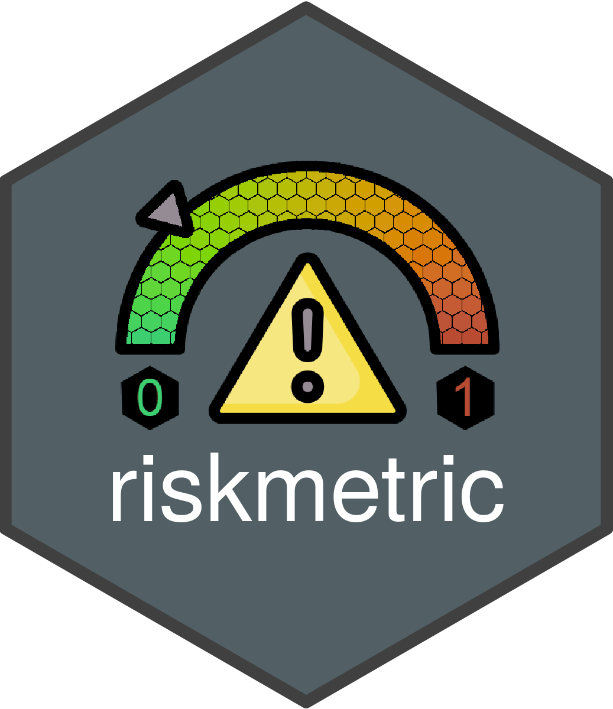
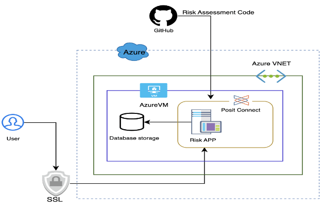
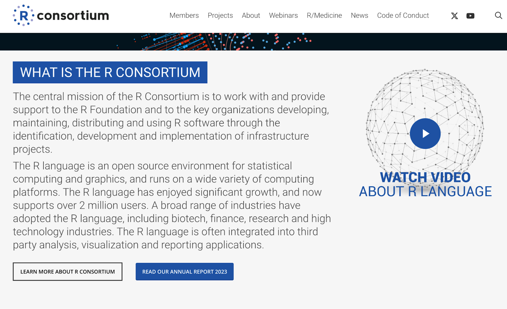
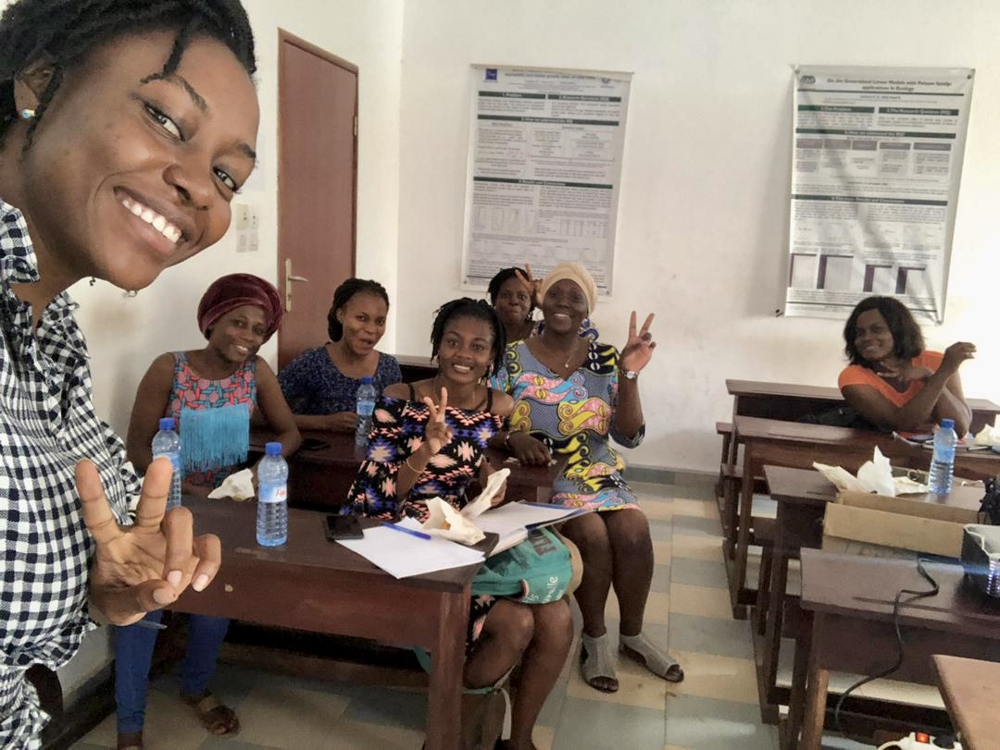
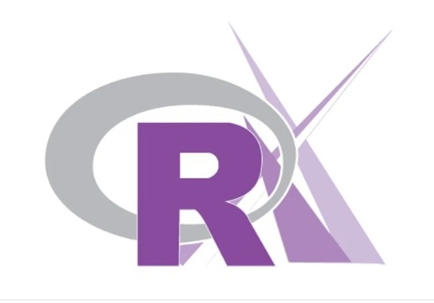
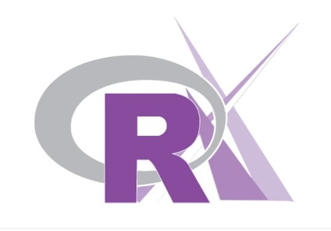
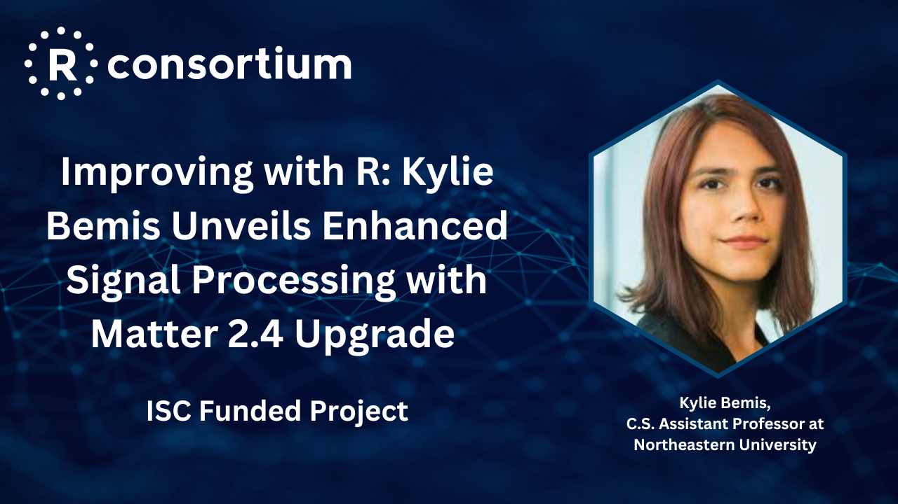

The R Validation Hub Risk Metric Framework

The riskmetric R package implements a framework to quantify an R package’s “risk of use” by assessing a number of meaningful metrics designed to evaluate package development best practices, code documentation, community engagement, and development sustainability.
riskassessment is a shiny front-end for accessing the riskmetric framework. Features include the ability to manage reviewer privileges, explore package source files hands-on, automate decisions based on pre-set rules, and generate summary reports. 
Recently, working with the R Consortium Rise Assessment team, ProCogia engineers deployed the reassessment application to a Posit Connect-powered implementation in the Azure cloud.

This new deployment should make it possible for anyone interested to experiment with the risk assessment approach to “R package validation”.
The following credentials enable you to test drive the application:
URL: https://app.pharmar.org/riskassessment/
Sample UID: PharmaUser
PWD: ProCon@123
For more information, contact the Risk Metrics team.
- Propose a feature for us to consider
- Join the dev team – extra hands make light work
- Fill out our survey so we can learn from you
Annual Report – Published
- You can download the report here.

Upcoming Events
We are sponsoring or providing grants for most of the events listed below. A full list is available here. If you would like to attend one of the events on behalf of the R Consortium, please reach out to us here. If you attend, you’ll have a chance to get the official – and highly coveted – R Consortium sticker for your laptop!

2024 Sponsored Events
- SatRdays London 2024 April 27
- New York R Conference May 16-17
- R/Finance May 18
- R/Medicine June 10-14
- Cascadia R June 21-22
- useR! 2024 July 8-11
- PHUSE SDE July 25
- posit:conf August 12-14
- BioC Europe September 4-6
- EARL 2024 September 4-5
- Shiny in Production October 9-10
- IFoA Life October 14-16
- R Government Fall 2024
- PHUSE EU Connect 2024 November 10-13
Free R-related Technology and Industry Webinars
The R Consortium hosts a wide variety of webinars from experts who use R to help solve problems in many different industries. For a full list of our webinars, please see: https://www.r-consortium.org/webinars Here are just a few of the most recent R Consortium webinars. (Click on the image to get more details and a full webinar recording.)
R/Medicine: Quarto for Reproducible Medical Manuscripts
 New Webinar: Tidy Finance and Accessing Financial Data – R Consortium
New Webinar: Tidy Finance and Accessing Financial Data – R Consortium

R Consortium Supports R User Groups Around the World!
The R Consortium R User Groups (RUGS) Program is the primary vehicle for the R Consortium to award Social Infrastructure Grants. Social Infrastructure includes meetings, events, conferences, and other activities to strengthen the R Community. Find out how you can support your local R User Group here: https://www.r-consortium.org/all-projects/r-user-group-support-program
Here are a few recent examples of great R User Groups around the world that we support:
Aligning Beliefs and Profession: Using R in Protecting the Penobscot Nation’s Traditional Lifeways

“… I’m also exploring the possibility of starting a mini R coding group at the school. With students already exposed to basic coding through MIT’s Scratch, advancing to R seems a promising and exciting step.”
Angie Reed, Water Resource Planner, Penobscot Indian Nation
R for Public Health Data Analysis in Karachi, Pakistan

“…I express gratitude to the R Consortium for their support on this transformative journey. Envisioning a significant impact on Pakistan, I am dedicated to constructing a vibrant open source community.”
Uzair Aslam, the founder of the Kariachi R User Group
R-Ladies Cotonou – A Community that Makes R Accessible for French-Speaking African Women

“Empowering French-speaking African women with the power of R is our mission.”
Nadejda Sero, the founder of the R Ladies Cotonou chapter
R-Ladies Goiânia: Promoting Diversity and Inclusion in Local R Community
 

“R language is widely used in Brazil across various sectors, including health, agriculture, and financial institutions. The primary reason for its popularity is the vast range of packages it offers and the structured control offered by CRAN, which enhances the language’s credibility and security.”
Fernanda Kelly, founder and organizer of the R-Ladies Goiânia
Building Extended R Packages to Improve R Infrastructure
A major goal of the R Consortium is to strengthen and improve the infrastructure supporting the R ecosystem. We seek to accomplish this by funding projects that will improve the technical infrastructure of R. Technical Infrastructure projects that have been funded include:
R-hub, a centralized tool for checking R packages- Testing DBI and improving key open source database backends
- Improvements in packages such as mapview and sf
- Improving Translations in R
- Ongoing infrastructural development for R on Windows and macOS
If you are interested in finding out more, please see: https://www.r-consortium.org/all-projects/call-for-proposals
Some recent projects include:
Satellite Data with R: Unveiling Earth’s Surface Using the ICESat2R Package
Improving with R: Kylie Bemis Unveils Enhanced Signal Processing with Matter 2.4 Upgrade 
Get in Touch with the R Consortium!
Follow us on social media or contact us here:https://www.r-consortium.org/contact